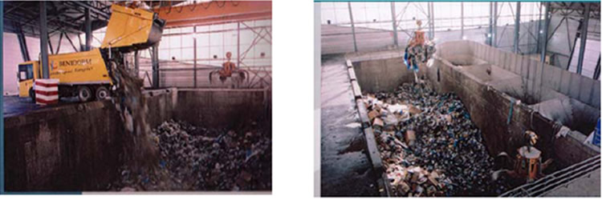

Limpieza de las playas de Benidorm
Uno de los principales objetivos del ayuntamiento de Benidorm es la mejora constante de los procesos de limpieza de las playas con una doble finalidad: 1) garantizar la calidad de las arenas para su disfrute por los usuarios y 2) administrar de forma correcta y adecuada todos los residuos encontrados en las playas.
La limpieza de la arena es uno de los aspectos fundamentales de la conservación de playas ya que de ella depende que no se alteren sus propiedades naturales. La calidad de las arenas es examinada semanalmente por el Laboratorio Municipal de Benidorm, mediante un análisis de hongos totales, patógenos y coliformes, un buen indicador de su calidad.
Proceso de Limpieza
El proceso de limpieza de las playas del municipio empieza por el salteo y cribado profundo de la arena, seguido de la retirada de residuos de la zona de baño y de los residuos flotantes encontrados en el mar. La limpieza de las playas incluye no sólo el área ocupada por el usurario, sino que incluye también áreas públicas marítimas.
El proceso de limpieza no termina en la recogida de los residuos. Después, los residuos se separan y son enviados a lugares específicos. De la limpieza de las playas podemos diferenciar dos grupos de residuos: aquellos que son generados en las playas (R.S.U, residuos sanitarios y algas), y aquellos que son generados por el mantenimiento de la maquinaria de limpieza de playas.

Tipos de residuos
En el caso de los residuos sanitarios, distinguimos los residuos no peligrosos, como objetos cortantes y punzantes que no han tenido contacto con líquidos, además de vendajes, y los peligrosos, aquellos que para prevenir infecciones son objeto de requisitos especiales para su recogida y eliminación. Por otro lado, los residuos asimilables a urbanos como papeles, envases, colillas y plásticos, tanto los encontrados en la arena y retirados por la maquinaria de limpieza, como los recogidos de las papeleras, son transportados directamente a la planta de transferencia del municipio. En la planta los residuos se pesan y estos datos son registrados en un programa de computadora que calcula las diferencias temporales en la generación de residuos.
MES |
Kg (2003) |
Kg. (2004) |
Enero |
14.360 |
12.060 |
Febrero |
8.760 |
7.600 |
Marzo |
11.420 |
10.380 |
Abril |
13.760 |
25.260 |
Mayo |
36.820 |
57.780 |
Junio |
60.540 |
67.160 |
Julio |
108.940 |
44.340 |
Agosto |
87.580 |
168.820 |
Septiembre |
29.820 |
40.440 |
Octubre |
13.500 |
11.860 |
Noviembre |
63.720 |
16.440 |
Siembre |
11.760 |
16.180 |
TOTAL |
460.980 |
478.320 |
La tabla 1 muestra los datos de 2003 y 2004.En la tabla se observa un claro aumento en la generación de residuos de las playas en los meses de temporada alta (julio y agosto), iniciando su descenso en el mes de septiembre. En noviembre de 2003 se incrementaron los residuos, posiblemente por la coincidencia con las fiestas patronales.
Recolección y procesamiento de residuos de mantenimiento
Por otra parte, los residuos resultantes de los procesos de mantenimiento preventivo y correctivo de los vehículos y la maquinaria de limpieza son otro tipo a tener en cuenta en la limpieza de playas. En el taller municipal los residuos generados por las máquinas y se separan y analizan. Los residuos considerados como peligrosos en el catálogo europeo de residuos, son registrados en el libro de residuos del taller. En el registro se anota su clasificación, caracterización, origen, código CER, gestor autorizado, fecha de retirada y cantidad generada.
RESIDUOS |
CÓGIGO CER |
2003 (Kg.) |
2004 (kg.) |
||
Aceite usado |
130110/130205/130206/130307 |
485 |
300 |
||
Baterías usadas de automoción |
160601 |
650 |
500 |
||
Filtros aceite de automoción |
160107 |
125 |
25 |
||
Disolventes no halogenados |
080111 |
125 |
54 |
||
Trapos contaminados |
150202 |
5 |
5 |
||
Envases contaminados |
150111 |
15 |
65 |
||
Anticongelante usado |
160114 |
10 |
10 |
||
Residuos de pinturas y barnices con disolvente |
080111 |
40 |
- |
||
TOTAL |
1.455 |
959 |
|||
La tabla 2 muestra los distintos residuos peligrosos generados en el taller de mantenimiento durante el periodo 2003 – 2004. En la tabla aparecen la codificación y la cantidad generada de residuos.
Durante los años 2003 y 2004 se han tratado un total de 2.414 Kg de residuos peligrosos, resultantes del mantenimiento de los vehículos de playas. Además, con la finalidad de reducir, reutilizar y reciclar al máximo los residuos generados, se adoptaron las opciones de minimización aprobadas en el Plan de Prevención y Reducción de residuos peligrosos. Todas estas medidas son para mejorar la calidad de las playas y para que el turista pueda disfrutarlas.